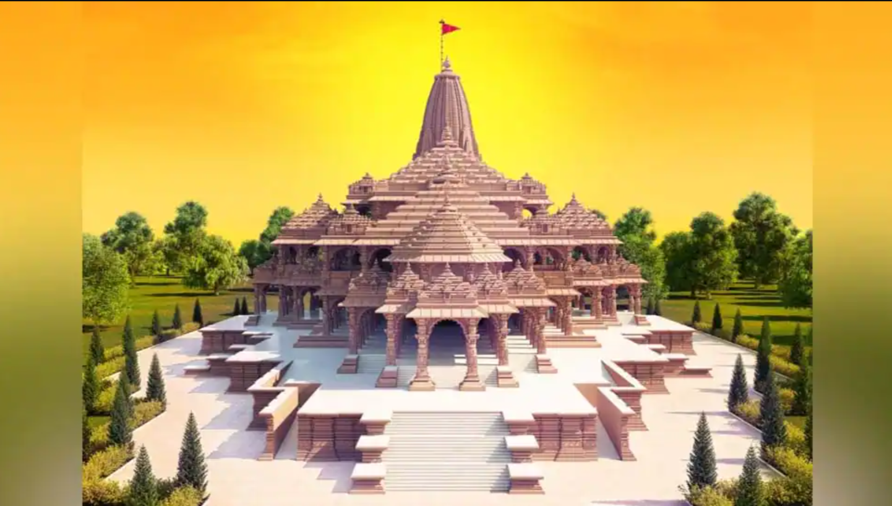

RAM JANMABHOOMI TEMPLE
Ram Mandir that is being built in Ayodhya, Uttar Pradesh, India, at the site of Ram Janmabhoomi, according to the Ramayana the birthplace of Rama, a principal deity of Hinduism. The temple construction is being supervised by the Shri Ram Janmabhoomi Teerth Kshetra. The ground-breaking ceremony was performed on 5 August 2020 by India’s prime minister Narendra Modi. The temple premises will include temples dedicated to deities Surya, Ganesha, Shiva, Durga, Vishnu and Brahma. Ram Lalla Virajman, the infant form of Rama, an avatar of Vishnu, is the presiding deity of the temple.The original design for the Ram temple was prepared in 1988 by the Sompura family of Ahmedabad. The Sompuras have been part of the temple design of over 100 temples all over the world for at least 15 generations, including the Somnath temple. In August 2021, a viewing location was created for the public to watch the constructionDuring the 2021 Delhi Republic Day parade on Rajpath, Uttar Pradesh's tableau showcased a replica of the Ram Mandir. Diwali in 2021 saw small sized replicas of the mandir being constructed.

